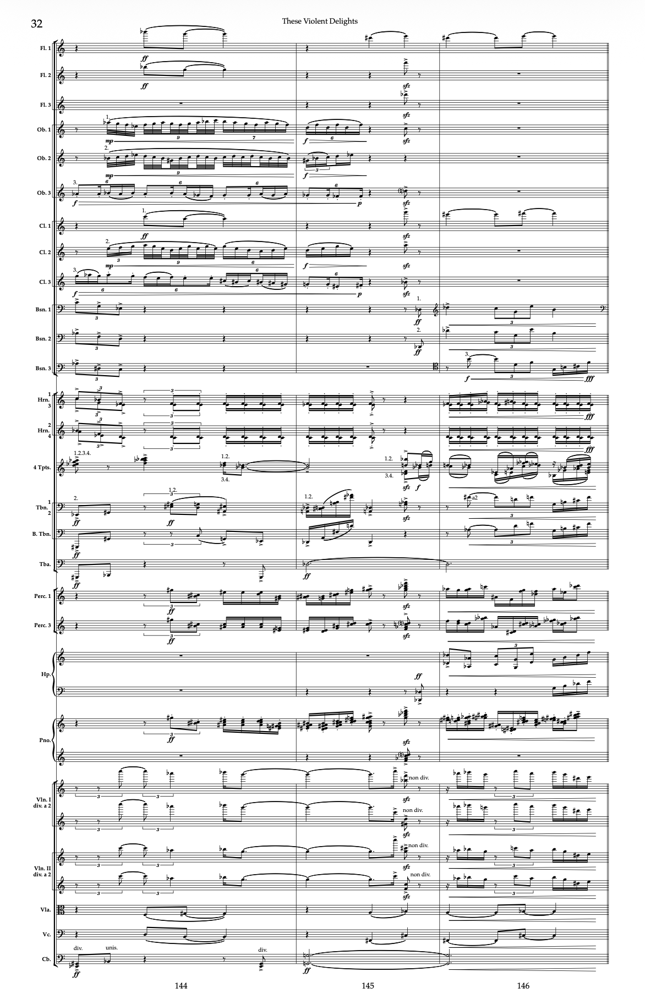

Orchestra
These Violent Delights, p. 32
What a model has to get right
- Thirty-one staves, with player numbers (1., 2., 3., a2) inside shared staves.
- Four trumpets on one staff, splitting into two voices and back.
- Divisi violins on paired staves, then “non div.” in the middle of a bar.
- Clef changes in the middle of a system.
- Nine and seven against six and three in the woodwinds.